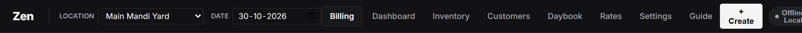

Figure 1.1: Global header bar with location stall selector, operational date picker, cloud sync indicator, owner lock, and quick actions.
1.1 Top Header Controls
- Location Stall Dropdown: Select your active trading platform (e.g. Main Mandi Yard, Wholesale Shed B). Every bill generated will automatically tag this stall for isolated or combined accounting.
- Operational Date Picker: Changes the operational working date. Allows inspecting past days' transactions, verifying customer accounts on a previous date, or issuing back-dated bills.
- Cloud Sync Pill: Displays live connection state:
- Synced: Local device is connected and current with Google Sheets.
- [N] Queued: Offline bills stored safely on device, waiting for internet connection.
- Local: Cloud sync URL not configured. Operating purely offline.
- Owner Lock: Toggles between Cashier Mode and Owner Unlocked mode. When cashiers are on duty, sensitive actions (resetting ledger, annual rollover, deleting customers or bills) are locked behind the 4-digit PIN.
- Language Toggle (English / हिन्दी): Instantly switches all headings, receipts, and table headers between English and Hindi.
- Theme Toggle (Dark / Light): Switches between dark high-contrast mode (optimized for 4:00 AM auction yards) and daylight mode.